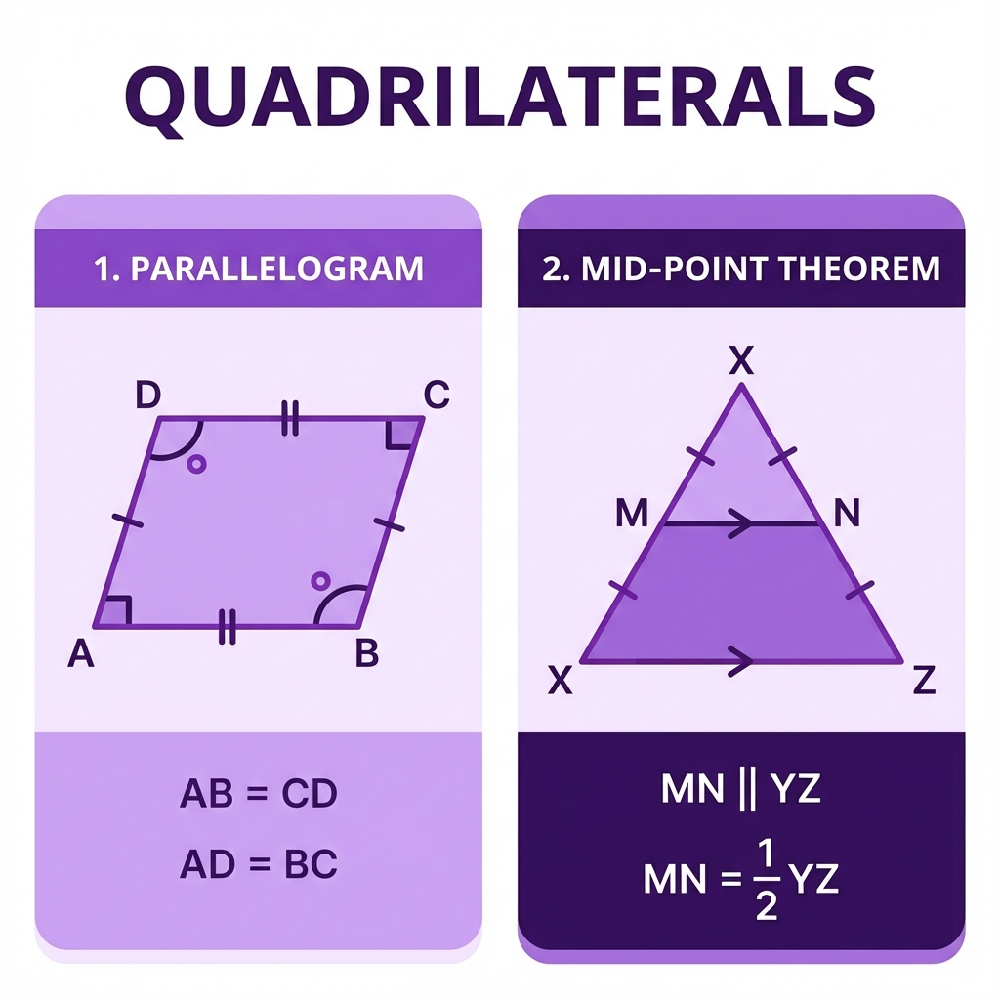

1. What is a Parallelogram? (Samantar Chaturbhuj)
Parallelogram ek 4-sided figure hai jinki Opposite sides parallel hoti hain. Matlab wo kabhi nahi milengi.
Imagine karo ek cardboard ka dabba (jo Rectangle hai). Agar tum use upar se thoda dhakka do (squash karo), toh wo thoda tedha ho jayega.
Uski length aur height same rahegi, bas angles change ho jayenge. Ye "Tedha Rectangle" hi Parallelogram hai.
2. Properties of Parallelogram
Agar koi figure Parallelogram hai, toh usme ye khaas baatein hongi:
- Opposite Sides Equal: Aamne-saamne ki sides ki lambai barabar hogi (AB = DC).
- Opposite Angles Equal: Aamne-saamne ke corners ke angles barabar honge (Angle A = Angle C).
- Diagonals Bisect Each Other: Unke diagonals ek dusre ko barabar aadha kaat-te hain.
Tumne "Scissor Lift" dekhi hai? Jo upar neeche hoti hai? Usme 'X' shape banta hai.
Jab lift upar neeche hoti hai, wo 'X' (diagonals) hamesha center se hi juda rehta hai. Iska matlab diagonals hamesha ek dusre ko center (midpoint) par hi meet karte hain.
3. Important Proof: Diagonal & Congruence
Theorem 8.1: A diagonal of a parallelogram divides it into two congruent triangles.
Proof (Saboot):
Hume diya hai Parallelogram ABCD aur Diagonal AC.
- Parallel lines AB aur DC ko dekho, aur AC transversal hai. Toh Alternate Interior Angles barabar
honge.
(Angle 1 = Angle 2) - Parallel lines AD aur BC ko dekho. Toh Alternate Interior Angles barabar honge.
(Angle 3 = Angle 4) - AC line dono triangles mein common hai (AC = AC).
Do angles aur unke beech ki side barabar hai. ASA Rule lag gaya!
So, ΔABC ≅ ΔCDA. (Proved!)
4. Condition for Parallelogram
Ek quadrilateral parallelogram kab banta hai?
Zaruri nahi ki dono pairs parallel hon. Rule: Agar sirf EK Pair opposite sides ka Equal bhi ho aur Parallel bhi ho, toh wo pura figure automatic Parallelogram ban jata hai.
5. The Mid-Point Theorem (MpT)
Ye geometry ka ek bahut powerful tool hai.
The line segment joining the mid-points of two sides of a triangle is parallel to the third side and is half of it.
Maano ek bada triangular park hai ABC. Tumari road AB hai aur AC hai.
Agar tum AB ke midpoint se start karke AC ke midpoint tak ek shortcut bridge banao, toh:
- Wo bridge teesri side (BC) ke bilkul parallel hoga.
- Uski lambai BC se bilkul aadhi (half) hogi.
Yeh "Shortcut Rule" hi Mid-Point Theorem hai.
📊 Visual Summary: Quadrilaterals

📌 Aage Ka Content (Next Chapter)
Quadrilaterals ke baad hum ek final shape dekhenge jo corners wala nahi, balki gol hai: Circles.